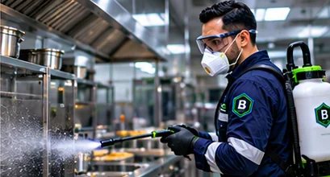

Évaluer
Comprendre le problème, les zones exposées et vos priorités.
BIOGUARD 3D · Insectes
Une approche adaptée aux espèces, aux zones sensibles et à l’usage des locaux.
Basés à Rabat · Déplacements partout au Maroc selon faisabilité

Notre approche
Chaque lieu a ses contraintes. Notre équipe technique évalue les besoins avant de proposer la méthode adaptée.
Comprendre le problème, les zones exposées et vos priorités.
Définir une intervention ciblée et communiquer les consignes utiles.
Partager les recommandations et organiser le suivi lorsque nécessaire.
Pour les professionnels et particuliers
Pour les établissements professionnels, les documents d’intervention et les modalités de suivi sont définis selon la prestation convenue. Une attestation de passage peut être remise pour un passage réellement effectué, avec des informations exactes sur l’intervention.
Découvrir nos solutions professionnelles →Indiquez votre ville, votre type de local et le problème rencontré. Nous vous orienterons vers la suite adaptée.
☎ 06 75 31 13 17Envoyer un e-mailIdentifier le problème
Des insectes observés près des points d’eau, des traces dans les placards ou des passages répétés de fourmis peuvent justifier une inspection.
Inspecter les zones humides, les fissures et les espaces derrière les équipements.
Identifier les voies d’accès et les sources alimentaires avant de choisir une méthode adaptée.
Identifier l’espèce et les conditions favorables à sa présence. Pour les punaises, consultez notre service punaises de lit.
Les cuisines, réserves et locaux techniques nécessitent une approche adaptée à leur activité. Les interventions et consignes sont définies après évaluation.
Restaurants et cafés · Contrats de maintenance · Qualité et traçabilité
Basés à Rabat, nous étudions les demandes à Salé, Témara, Skhirat et ailleurs au Maroc selon faisabilité.
Demander un devisLe devis dépend de l’espèce, de la surface, du niveau d’infestation et des contraintes du lieu.
Les consignes dépendent de la méthode et des produits retenus. Elles sont communiquées avant l’intervention.
Réduire les sources de nourriture et d’eau, traiter les accès et organiser un suivi lorsque nécessaire.
Contactez BIOGUARD 3D pour discuter de votre situation.